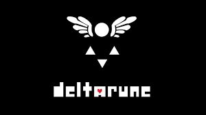

Te damos la bienvenida a DELTARUNE
Esta es un fanpage tributo a el Videojuego Deltarune
ACERCA DE
DELTARUNE es un juego RPG creado en el 31 de octubre de 2018 por Toby Fox. Un juego que nos trae a tiempos retro con unas mecanicas o jugabilidad distinta al RPG clasico o JRPG, ya que es una version mas simplificada con la oportunidad de pasar el juego sin subir LVL. Para saber mas haz click aqui

PERSONAJES
Los personajes son una parte importante en un videojuego ya que son las compañias que tendremos a lo largo del mismo, su personalidad y carisma influencia en nuestra empatia e inmersion en el videojuego, algo que Toby Fox sabe muy bien a la hora de hacer personajes. Para saber mas haz click aqui
SOUNDTRACK
El OST es un factor importante a la hora de la inmersion de un videojuego, ya que, como los personajes, representan un recuerdo sensorial, en este caso auditivo, que nos hace recordar cuando reconocemos ese patron o melodia. Para saber mas haz click aqui
Canciones
- Attack of the killer queen - Toby Fox
- Lost Girl - Toby Fox
- BIG SHOT - Toby Fox
- A CIBER WORLD? - Toby Fox
AUTOR
Aqui te mostramos un breve resumen de los logros de Toby Fox y la conexion que tuvo con el juego undertale para crear este juego, ademas de una breve reflexión. Para saber mas haz click aqui